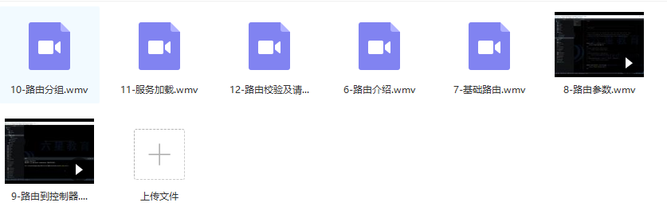
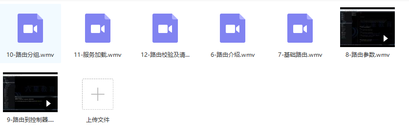

原文连接:https://www.cnblogs.com/it-3327/p/11782874.html
在Web应用程序中，有必要识别跨越请求的用户并为每个用户保存数据，为此，像Laravel这样的框架提供了一种称为会话的机制。本篇文章就来为大家介绍关于Laravel处理session（会话）的方法。
会话可以存储数据（键和值），Laravel提供各种后端会话，可以在config / session.php中设置。
默认设置的文件会话将会话保存在storage / framework / sessions /目录中的文件中。在生产环境中，我们将考虑使用数据库会话，redis会话等，但在开发环境中，使用默认的文件会话就足够了。
如何在Laravel中使用会话（session）
使用Laravel操作会话有两种主要方法。
一种是通过传递给操作的Request实例。
使用Illuminate \ Session \ Store实例。
 

链接：https://pan.baidu.com/s/1v5gm7n0L7TGyejCmQrMh2g 提取码：x2p5
免费分享，但是X度限制严重，如若链接失效点击链接或搜索加群 群号518475424。
另一种方法是使用全局辅助函数session（）。
使用Illuminate \ Session \ SessionManager实例。
我们来看在Laravel中使用会话（session）的具体示例
一个非常简单的例子
我们定义以下路线。
首先，在浏览器中访问/ put-data时，会执行第一条路径，可以确认数据已保存在会话中。
|
1 |
|
接下来，在浏览器中访问/ list-data时，将执行第二条路径，可以确认之前保存的数据是否已保留
|
1 |
|
当然还有其他数据，但这些是自动保存的数据，Laravel本身也在使用会话。
以上就是Laravel处理session（会话）的方法详解的详细内容。